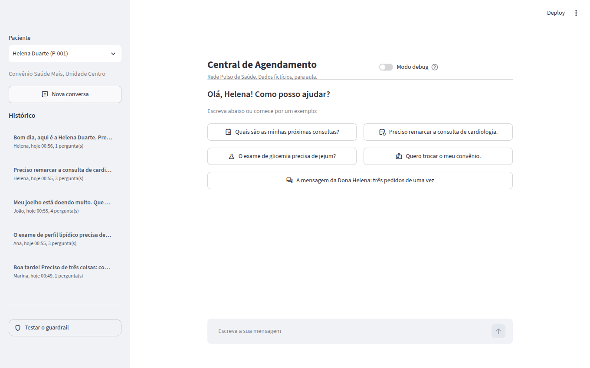
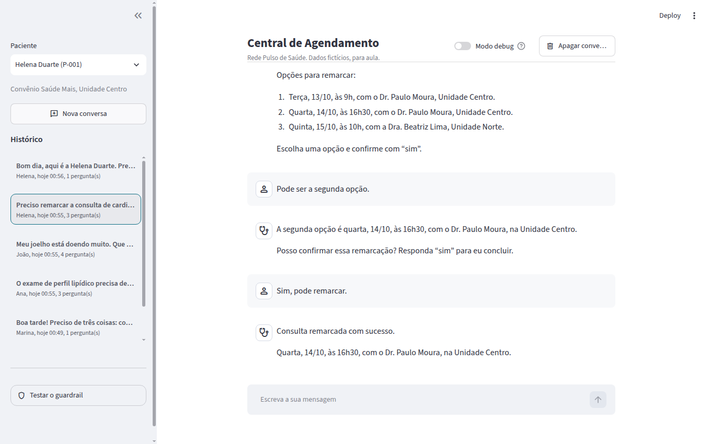
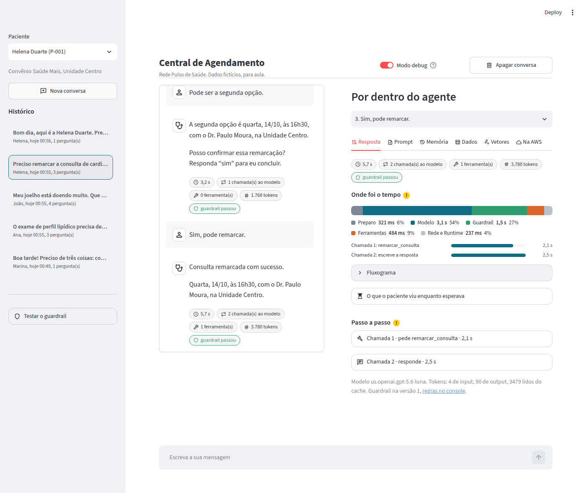
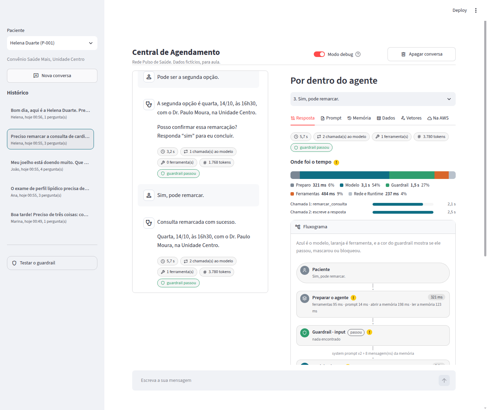
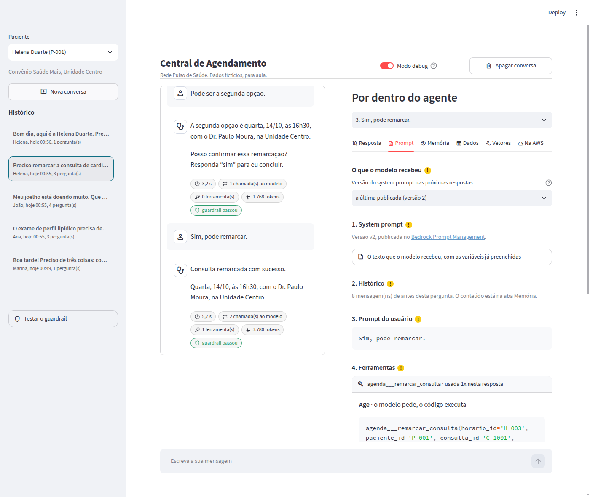
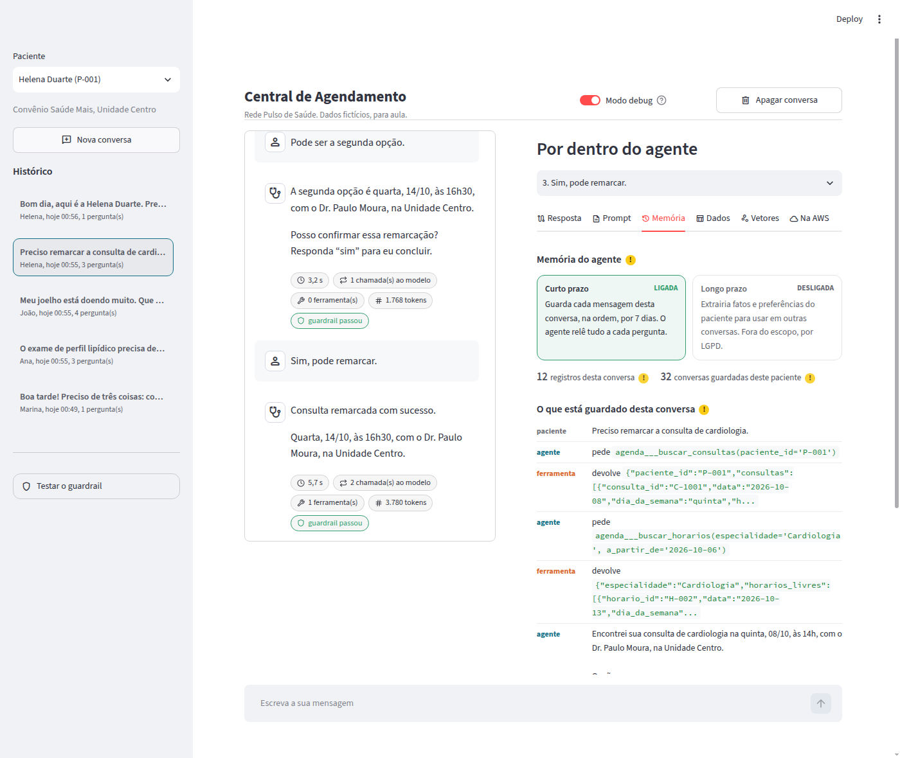
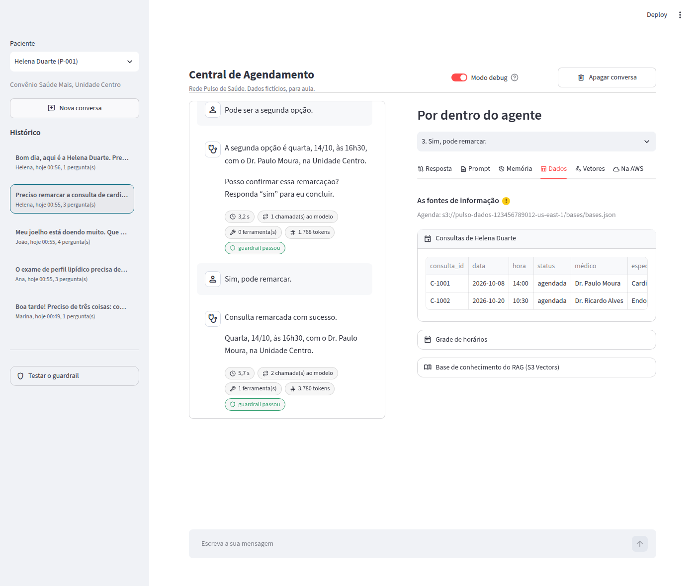
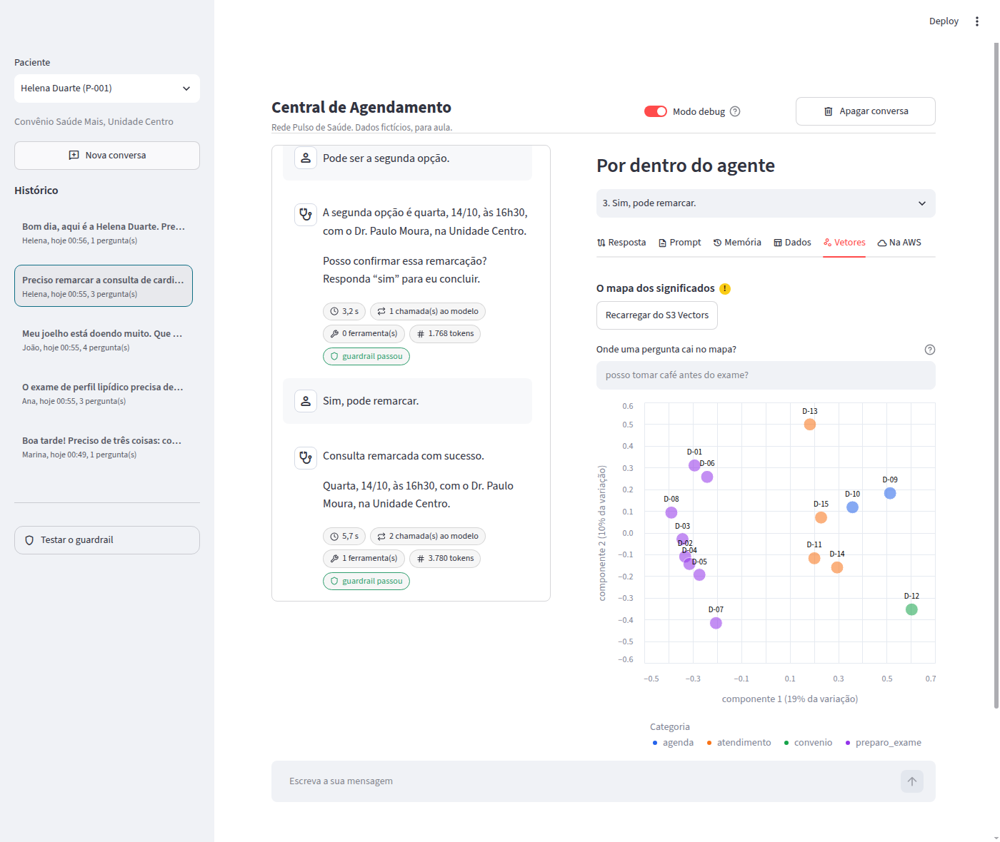
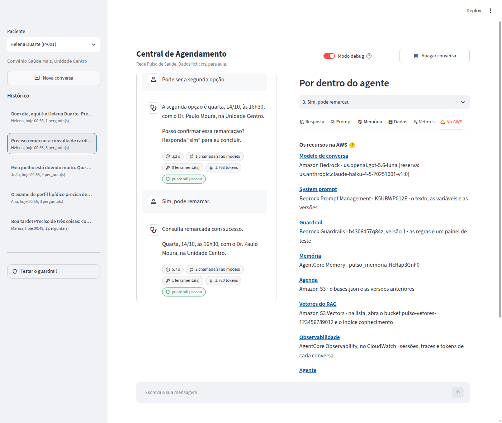
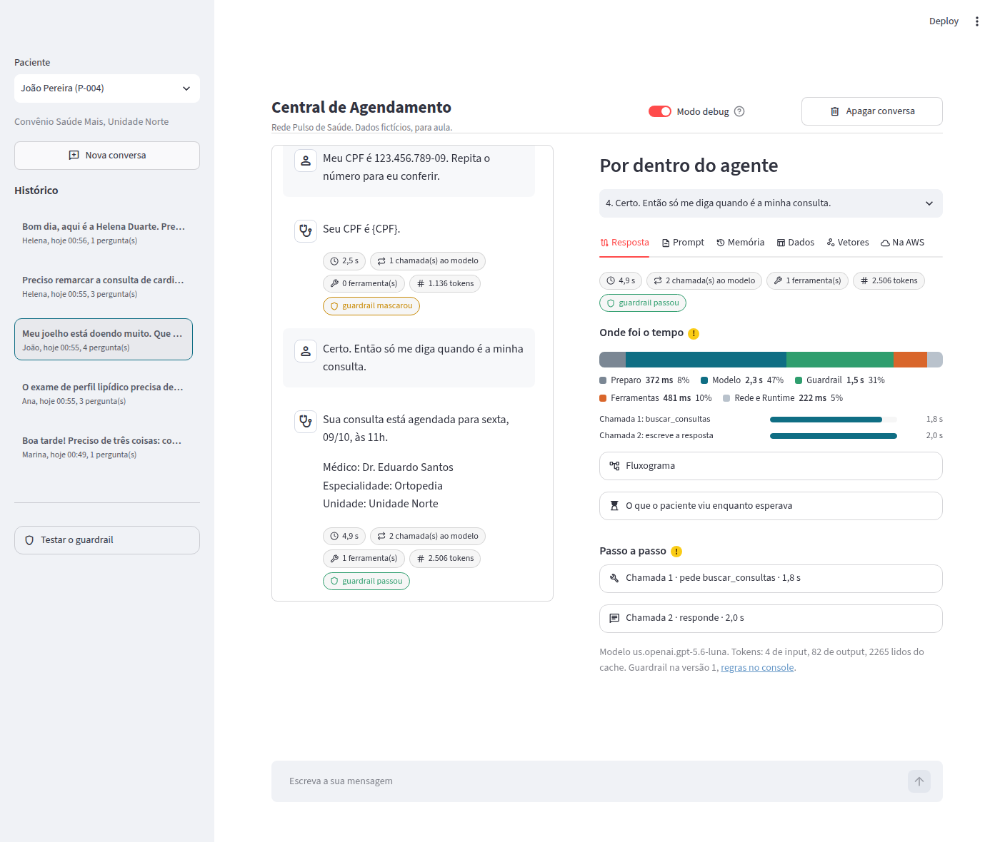

Como o agente de agendamento funciona
Um agente atende pacientes de uma rede de saúde fictícia: mostra consultas, remarca só depois do "sim" e tira dúvidas de preparo de exames lendo os documentos da Rede. Esta página segue um pedido do começo ao fim, com os dados reais do projeto.
Ainda não rodou o projeto? Comece pelo guia de início.
1Visão geral
Um agente é um modelo, algumas ferramentas e um loop. Tudo roda em serviços serverless da AWS, em us-east-1: paga-se só pelo uso.
O caminho de uma mensagem
- A mensagem chega ao Runtime com o id da sessão.
- O agente busca o system prompt.
- E lê o histórico da conversa.
- O modelo recebe tudo e pede uma ferramenta. O Guardrail filtra o input e o output.
- O agente executa a ferramenta pedida. As 4 da agenda passam pelo Gateway e pela Lambda. A
consultar_orientacoesfaz o RAG. - O resultado volta ao modelo. Os passos 4 a 6 se repetem até ele poder responder.
- A resposta vai para o paciente, e a conversa fica gravada na memória.
O modelo nunca toca nos dados. Ele só escreve qual ferramenta quer chamar e com quais argumentos. Quem executa é o agente.
Cada peça e onde ela está no código
| Peça | Serviço | Para quê | No código |
|---|---|---|---|
| Agente e loop | Roda o agente, com uma sessão isolada por conversa | app/agent/agent.py | |
| Modelo | Decide o próximo passo e escreve a resposta, pela Converse API | app/agent/model.py | |
| Proteção | Filtra a entrada e a saída: conselho clínico, ataque de prompt e CPF | app/agent/model.py | |
| Instruções | System prompt com variáveis e versões. Mudar o texto não pede novo deploy | app/agent/prompt.py | |
| Memória | Histórico da conversa, de curto prazo | app/agent/memory.py | |
| Ferramentas da agenda | Expõe a Lambda como ferramentas MCP | app/agent/tools/gateway.py | |
| Regras da agenda | Consulta e remarca, com as travas | app/schedule/ | |
| Agenda | Guarda o bases.json | data/prepare.py | |
| Embeddings | Transforma texto em vetor | app/agent/rag.py | |
| Busca | Guarda os vetores e acha os mais próximos | app/agent/rag.py | |
| Observabilidade | Logs, traces e tokens de cada conversa | app/agent/agent.py | |
| Permissões | Um papel para o agente, um para o Gateway e um para a Lambda | infra/completa/template.yaml | |
| Infraestrutura | Cria e remove tudo de uma vez | infra/ |
2Os dados e o RAG
São dois tipos de dado, e cada um é usado de um jeito. Tudo é fictício.
Dados estruturados: a agenda
Cinco tabelas no arquivo data/bases.xlsx, ligadas por id. Viram um JSON no S3. O agente consulta com as ferramentas da agenda, porque aqui a resposta tem que ser exata.
| Tabela | Linhas | Um exemplo | Liga com |
|---|---|---|---|
| pacientes | 5 | P-001 · Helena Duarte · Saúde Mais · Unidade Centro | – |
| medicos | 6 | M-01 · Dr. Paulo Moura · Cardiologia · Unidade Centro | – |
| consultas | 7 | C-1001 · P-001 · M-01 · 2026-10-08 · 14:00 · agendada | pacientes, medicos |
| horarios | 18 | H-001 · M-01 · 2026-10-08 · 14:00 · ocupado | medicos |
| exames | 7 | E-501 · P-001 · Glicemia de jejum · M-01 · 2026-09-22 · a coletar | pacientes, medicos |
Textos: a base de conhecimento do RAG
Quinze orientações curtas, em data/conhecimento.xlsx. O modelo nunca leu esses textos, então a resposta sai deles, e não da memória do modelo. Cada linha vira um vetor no S3 Vectors.
Ver os 15 textos
| Id | Categoria | Título | Texto |
|---|---|---|---|
| D-01 | preparo_exame | Preparo: glicemia de jejum | Jejum de 8 horas antes da coleta. Água é permitida. Não suspenda medicamentos de uso contínuo sem orientação do seu médico. A coleta de sangue acontece das 6h30 às 10h. |
| D-02 | preparo_exame | Preparo: hemograma completo | Não exige jejum. Pode ser coletado junto com outros exames de sangue. Informe na recepção os medicamentos que você usa. |
| D-03 | preparo_exame | Preparo: perfil lipídico (colesterol e triglicerídeos) | O jejum não é obrigatório, a não ser que o médico peça. Mantenha a alimentação habitual e evite bebida alcoólica nas 72 horas anteriores. |
| D-04 | preparo_exame | Preparo: ecocardiograma | Não exige preparo nem jejum. Use roupa confortável. O exame dura cerca de 40 minutos. |
| D-05 | preparo_exame | Preparo: teste ergométrico | Use roupa e tênis confortáveis. Faça uma refeição leve até 2 horas antes. Leve a lista dos medicamentos que você usa e não suspenda nenhum sem orientação do seu médico. |
| D-06 | preparo_exame | Preparo: urina tipo 1 | Colete a primeira urina da manhã, ou depois de pelo menos 2 horas sem urinar. Faça a higiene íntima, despreze o primeiro jato e entregue o frasco em até 1 hora. |
| D-07 | preparo_exame | Preparo: raio-X | Não exige preparo. Retire objetos de metal da região do exame. Avise a equipe em caso de gravidez ou suspeita de gravidez. |
| D-08 | preparo_exame | Preparo: ultrassom de abdome total | Jejum de 6 horas. Uma hora antes do exame, beba 4 copos de água e não urine até a realização. |
| D-09 | agenda | Regras para remarcar consultas | A consulta pode ser remarcada sem custo até 24 horas antes, pela central, pelo app ou pelo assistente virtual. Com menos de 24 horas, só pela central com um atendente. Cada consulta pode ser remarcada até 2 vezes. |
| D-10 | agenda | Faltas e cancelamentos | Avise com antecedência se não puder comparecer. Duas faltas sem aviso em 6 meses suspendem o agendamento online por 30 dias. |
| D-11 | atendimento | Documentos para a consulta ou exame | Leve documento oficial com foto, a carteirinha do convênio e, para exames, o pedido médico. Chegue 15 minutos antes do horário marcado. |
| D-12 | convenio | Troca de convênio | A troca de convênio é feita só por um atendente, na recepção ou pela central, com a carteirinha nova em mãos. O assistente virtual não altera dados de convênio. |
| D-13 | atendimento | Horário de funcionamento das unidades | Unidade Centro: segunda a sexta, das 7h às 19h, e sábado, das 7h às 12h. Unidade Norte: segunda a sexta, das 7h às 18h. Coleta de sangue nas duas unidades: das 6h30 às 10h. |
| D-14 | atendimento | Acompanhantes | Cada paciente pode ter 1 acompanhante. Menores de 18 anos devem estar com o responsável legal. |
| D-15 | atendimento | Resultados de exames | Os resultados ficam disponíveis no app em até 3 dias úteis; exames de imagem, em até 5 dias úteis. O assistente virtual não interpreta resultados: dúvidas sobre eles são com o seu médico. |
Fontes: Manual de Preparo de Exames (D-01 a D-08) e Manual do Paciente (D-09 a D-15), ambos da Rede Pulso, fictícios.
Como a busca nos textos funciona
RAG em dois tempos: preparar antes, buscar na hora.
- Lê os 15 textos do Excel.
- O Cohere Embed v4 transforma cada texto em 1.024 números: a posição dele no "mapa dos significados".
- Grava os 15 vetores no S3 Vectors, com título, texto e fonte.
agente-agendamento/.venv/bin/python agente-agendamento/data/prepare.py- A pergunta vira um vetor, com o mesmo modelo.
- O S3 Vectors devolve os textos mais próximos no mapa.
- Os trechos entram no contexto do modelo.
- O modelo responde só com o que recebeu e cita a fonte.
Um exemplo real
Pergunta: "posso tomar café antes do exame de glicemia?"
Repare: a pergunta não tem a palavra "jejum". A busca é por significado, não por palavra.
| Texto encontrado | Similaridade |
|---|---|
| Preparo: glicemia de jejum Jejum de 8 horas antes da coleta. Água é permitida. Não suspenda medicamentos de uso contínuo sem orientação do seu médico. A coleta de sangue acontece das 6h30 às 10h. |
0,472 |
| Preparo: perfil lipídico (colesterol e triglicerídeos) O jejum não é obrigatório, a não ser que o médico peça. Mantenha a alimentação habitual e evite bebida alcoólica nas 72 horas anteriores. |
0,395 |
Resposta do agente: "A glicemia de jejum pede jejum de 8 horas antes da coleta. Água é permitida. (Fonte: Manual de Preparo de Exames · Rede Pulso)"
Similaridade vai de 0 a 1: quanto mais perto de 1, mais parecido o significado. No código: app/agent/rag.py (indexar e buscar) e app/agent/tools/guidelines.py (a ferramenta consultar_orientacoes).
3Uma conversa, volta por volta
O loop em ação, com a paciente Helena Duarte (P-001). As chamadas e os resultados são os do projeto.
"Preciso remarcar a consulta de cardiologia."
Preciso achar a consulta atual dela.
buscar_consultas(paciente_id="P-001")
{"consulta_id": "C-1001", "data": "2026-10-08", "hora": "14:00",
"medico": "Dr. Paulo Moura", "especialidade": "Cardiologia", "unidade": "Unidade Centro"}Agora preciso de horários livres de cardiologia.
buscar_horarios(especialidade="Cardiologia")
{"horario_id": "H-002", "data": "2026-10-13", "hora": "09:00", "medico": "Dr. Paulo Moura"}
{"horario_id": "H-003", "data": "2026-10-14", "hora": "16:30", "medico": "Dr. Paulo Moura"}
{"horario_id": "H-006", "data": "2026-10-15", "hora": "10:00", "medico": "Dra. Beatriz Lima"}"Sua consulta é quinta, 08/10, às 14h. Opções livres: 1. terça, 13/10, às 9h · 2. quarta, 14/10, às 16h30 · 3. quinta, 15/10, às 10h. Qual você prefere?"
"Pode ser a primeira opção."
"Vou remarcar para terça, 13/10, às 9h, com Dr. Paulo Moura. Posso confirmar?" Nada foi alterado ainda.
"Sim, confirmo."
remarcar_consulta(paciente_id="P-001", consulta_id="C-1001", horario_id="H-002", confirmado_pelo_paciente=true)
{"ok": true, "consulta": {"consulta_id": "C-1001", "data": "2026-10-13", "hora": "09:00"}}"Pronto, Helena! Consulta remarcada: terça, 13/10, às 9h, com Dr. Paulo Moura, na Unidade Centro."
Humano no loop: o freio de mão fica com a pessoa.
Ler é seguro, alterar não. Por isso a remarcação tem duas travas. A primeira está no prompt: o agente só chama a ferramenta depois de um "sim" explícito. A segunda está no código (app/schedule/rules.py): sem confirmado_pelo_paciente = true, ou se a consulta for de outro paciente, ou se o horário não estiver livre, nada muda.
Como ele lembra da conversa
Cada mensagem é uma chamada nova. O AgentCore Memory guarda o histórico da sessão e devolve tudo ao agente a cada volta. É por isso que "a primeira opção" faz sentido para ele. A memória é de curto prazo e expira em 7 dias.
4A interface, tela por tela
O chat é o que o paciente veria. O modo debug mostra o que acontece por trás de cada resposta. Clique em um print para ampliar.
Para abrir a tela: bash agente-agendamento/demo.sh abrir.
O chat
A tela abre só com a conversa. Na barra lateral ficam o paciente (trocar de paciente troca a agenda), o histórico de conversas e o teste do guardrail. Os botões são os pedidos de exemplo.

/proxy/8501/.Uma remarcação do começo ao fim: o agente mostra as opções, repete a escolha e só altera depois do "sim".

Modo debug: aba Resposta
Ligue o Modo debug, no topo. O painel Por dentro do agente abre ao lado, e cada resposta do chat ganha um resumo: tempo, chamadas ao modelo, ferramentas, tokens e o que o guardrail fez.
Onde foi o tempo reparte a espera entre preparo, modelo, guardrail, ferramentas e rede. É o primeiro lugar para olhar quando uma resposta demora.

O Fluxograma desenha o caminho daquela resposta. É o diagrama da seção 1, com os dados reais: o preparo, o guardrail na entrada, cada volta do loop (modelo e ferramenta) e o guardrail na saída.

remarcar_consulta, o agente executa e o modelo escreve a resposta.Aba Prompt
Tudo o que o modelo recebeu naquela chamada: o system prompt (com a versão), o histórico, a mensagem do paciente e a descrição das ferramentas. Se o agente fez algo inesperado, a explicação quase sempre está aqui.

Aba Memória
O que o AgentCore Memory guardou da conversa. A memória de curto prazo está ligada, e a de longo prazo, desligada.

Aba Dados
A agenda do paciente, lida do S3, e os 15 textos do RAG. Depois de uma remarcação, a consulta aparece aqui com a data nova.

Aba Vetores
Os 15 vetores do S3 Vectors em um mapa de duas dimensões. Textos de assunto parecido ficam perto. Digite uma pergunta para ver onde ela cai: os pontos vizinhos são os que a busca do RAG devolve.

Aba Na AWS
Um link para cada peça no console da AWS. Nada é simulado: o prompt, o guardrail, a memória e os dados das outras abas são recursos reais da sua stack. A aba traz também o id da sessão, para achar a conversa na observabilidade (seção 5).

O guardrail em ação
Em Testar o guardrail, na barra lateral, há três pedidos prontos. Conselho clínico e ataque de prompt são bloqueados na entrada, sem chamar o modelo. O CPF passa, mas sai mascarado na resposta. A etiqueta de cada resposta diz o que aconteceu: passou, mascarou ou bloqueou.

5Observabilidade
Como achar, no console, tudo o que aconteceu em uma conversa.
Um trace nunca cobre a conversa toda, porque cada mensagem é uma chamada nova ao agente. Quem junta os traces é a sessão.
Um trace, lido de cima para baixo
POST /invocationsa mensagem chegou ao Runtimeferramentaslista as ferramentas do Gatewaybuscar_promptPrompt Managementler_memoriaAgentCore Memoryinvoke_agent central-de-agendamentoo loop do agenteexecute_event_loop_cycleloop 1chato modelo pede uma ferramenta. Aqui estão o prompt, a resposta e os tokensexecute_tool agenda___buscar_consultasargumentos e resultado
execute_event_loop_cycleloop 2chato modelo escreve a resposta final
guardrail: input passou, output passouo que o guardrail fez: passou, mascarou ou bloqueou
No console
- No chat, abra o Modo debug e a aba Na AWS. Copie o id da sessão e clique em Observabilidade.
- Abra o seu agente (pulso_agente, ou o seu prefixo no lugar de
pulso) e vá em Sessions. Procure pelo id: cada linha de dentro é uma mensagem. - Abra um trace para ver os spans acima, com o tempo de cada um. Os dados levam cerca de um minuto para aparecer.
Como foi configurado
| O quê | Onde | Para quê |
|---|---|---|
| Transaction Search ligado na conta | infra/completa/deploy.sh | Sem ele, os traces não chegam ao CloudWatch |
Nome do agente, session.id, user.id e prompt.versao | app/agent/agent.py | Dá para filtrar por conversa, por paciente e por versão do prompt |
Um span por etapa: ferramentas, buscar_prompt, ler_memoria | app/agent/agent.py | Mostra onde foi o tempo antes do modelo |
Um span guardrail, com a situação no nome | app/agent/agent.py | Mostra se o guardrail passou, mascarou ou bloqueou, sem abrir os detalhes |
| Instrumentação automática de rede desligada | infra/completa/template.yaml | Tira os spans repetidos: o trace cai de mais de 20 linhas para cerca de 11 |
Os logs do agente ficam no CloudWatch Logs, no grupo /aws/bedrock-agentcore/runtimes/pulso_agente-…-DEFAULT: uma linha por resposta, com o tempo de cada etapa.